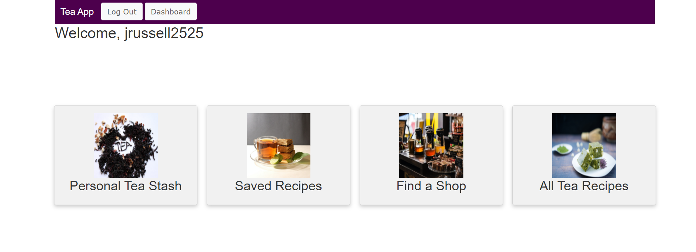

Source Code: | Live Demo
Project background
I decided to create a web application that allows tea fans to find and share information on tea shops, tea-based recipes as well as catalogue their personal tea collection
This project was the capstone for All Aboard Bootcamp lead by John Crepezzi, staff engineer at Github . All Aboard Bootcamp was launched by John, with a goal to increase diversity in tech by helping those in under-represented groups out of work due to COVID explore positions in tech by learning Ruby, Rails, HTML, CSS, and JavaScript.
Planning and list of technologies used
Project planning was done mainly using Notion
This project was built using:
Core functionalities/Interesting features:
Technical challenges and solutions
The biggest technical challenges were working with Active Record associations, the relationships and the built in methods. I struggled at time making sure I had the correct relationship set-up. Stackoverflow and the Rails documentation were a big help in navigating the challenges.
Creating a "save to personal favourites" was also a bit of a challenge. I found programming blog and a stack overflow post that helped me get started on adding the feature successfully.
Lessons learned/Room for Improvment
As this project was done as the capstone to a bootcamp, I found building a full-stack application to be a great way to cement what we had learned the previous month, while simultaneously challenging me to grow in my knowledge. Struggling with code resulted in me turning quite a bit to the Rails documentation. Each pass through the docs strengthened my understanding of Rails. StackOverflow was a great resource as well. While many of the answers were "look at the documentation", I also found many helpful suggestions and answers to questions. I learned a good deal about how to use StackOverflow better.
I would like to add on a few more features such as adding the option for users to submit reviews on tea shops and would like to include seach functionality to the reicpe page and the shop page.